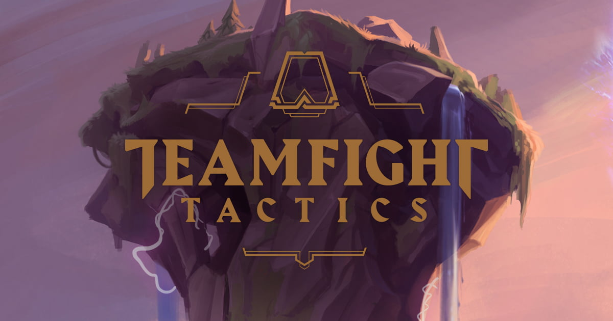

TFT blog
New Update

Patch 11.10 Notes
Hi!
Now that things are settling down after Midseason, we come bearing the meatiest part of this patch: a jungle update! There’s a big section you can scroll on down to, but the gist of it is that we’re making improvements to help the jungle experience feel less like a grind of swatting down camps of birds and wolves. We’re talking more lenient camp timers, a helping hand for junglers who are significantly behind in the game, and specific adjustments to jungle camps.
Zooming back to balance changes, a certain axe man and a blade babe have been crossing the line, so we’re taking them down a notch. On the other end, we’re giving some love to a luminous lady and a wingwoman who haven’t been feeling their best. Phase Rush, a safe bet for ranged and melee users, gets a nerf, whereas Abyssal Mask gets a buff to secure it as a more potent MR option.
Last but not least, Kog’Maw gets a VFX update, so prepare to be open-mouthed for a brushed up Mouth of the Abyss! (But not for too long— I hear he spits.)
And that's it! See ya in the next one.
Take this portal to the TFT patch notes to see what's in the cards for the first patch of TFT: Reckoning!
Hyper Rolling Lab
New Mode: Hyper Roll
It’s here, TFT’s first official Lab, Hyper Roll, where you can roll faster and harder than a three-star Dango. Here’s a brief overview of the new Lab which you can read more about here .